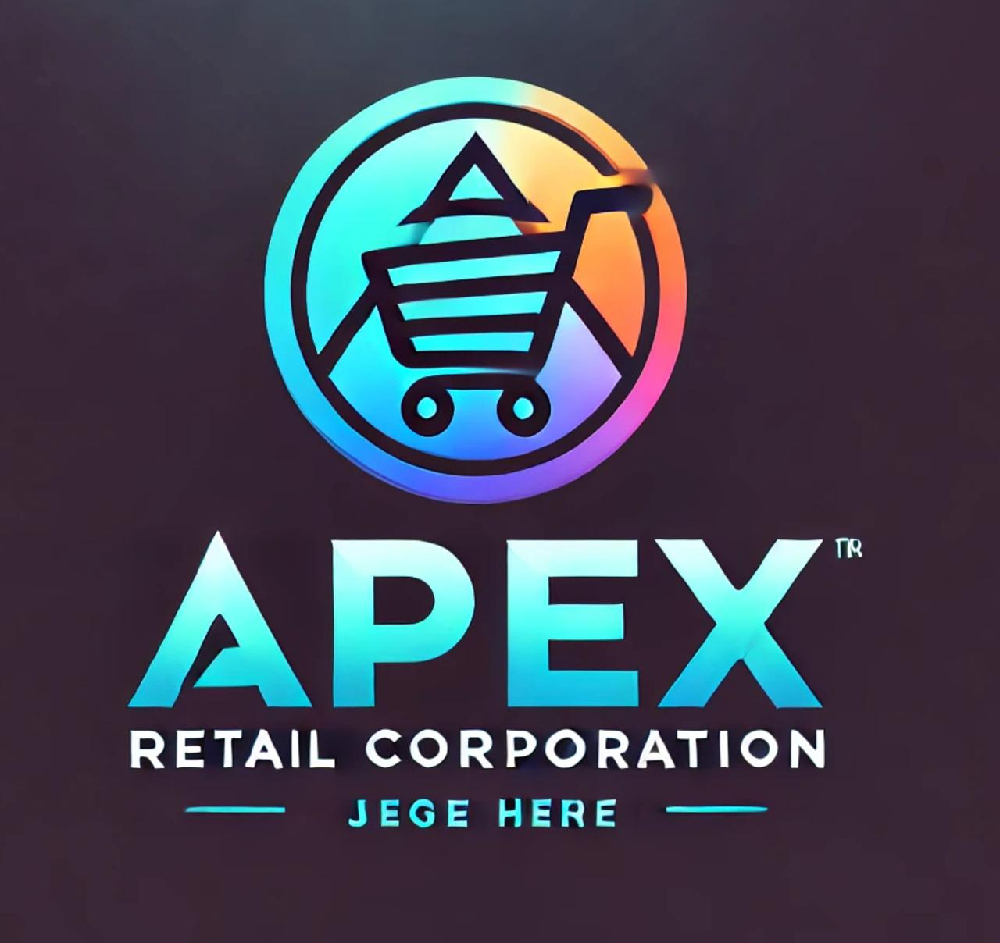
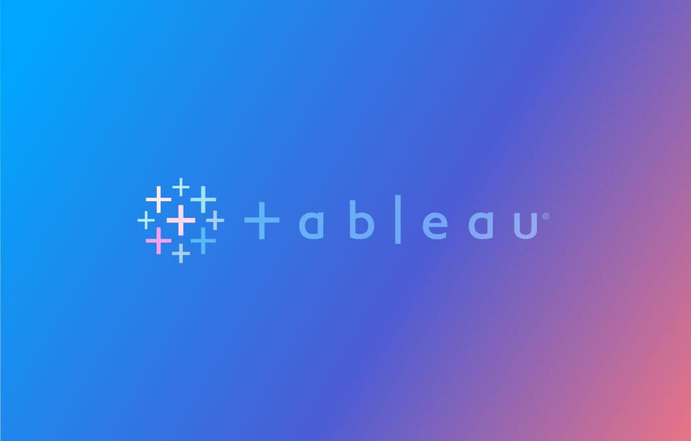

I’m Atharva
Data Scientist & Analyst,
exploring all things data in Toronto.

About
An Aspiring Data Scientist with Master's from University of Guelph. Built R Shiny applications for agricultural research and optimized ETL pipelines with 50% speed improvements. My passion lies in creating interactive dashboards and predictive models that help organizations make smarter decisions.
Skilled in Python, R, SQL, Tableau, Looker Studio and Machine Learning. Outside data I enjoy playing Football Manager, Fantasy Premier League, Assassins Creed, supporting Manchester City FC, and watching Chinese & Turkish dramas.
Seeking Data Analyst, Business Analyst, or Data Scientist roles where I can apply my technical skills to solve real-world problems and drive data informed decision making.
Skills
Experience
University of Guelph
Data Analyst (Graduate Research Assistant)
May 2025 – Aug. 2025
Optimized fertilizer recommendations by rebuilding Ontario’s Corn Nitrogen Rate Calculator as a Shiny app, enabling faster data-driven decisions; built an interactive Historical Ontario Corn Nitrogen Database Dashboard on 60+ years of trial data to automate fertilizer risk assessments and monitoring; and improved nitrogen response modeling using nls(), visualizing results via ggplot2/plotly to help farmers and stakeholders make evidence-based decisions.
United We Care
Data Science and Analytics Intern
Dec 2023 – Apr 2024
Identified retention risks for 5,000+ users by segmenting and building KPI dashboards to enable targeted product interventions; reduced data processing time by 50% by optimizing SQL ETL pipelines across 200+ datasets, improving analytics readiness; and enabled faster executive decisions by developing dashboards in Looker Studio and Excel.
Education
University of Guelph
Master of Data Science
Graduated with a GPA of 3.86/4, specializing in data science, machine learning, predictive modeling, and interactive dashboards. Completed projects using Python, R, SQL, and BI tools, including R Shiny apps gaining hands-on experience transforming complex data into actionable insights.
Rajiv Gandhi Institute of Technology
B.E Computer Engineering
Graduated with a CGPA of 8.6/10, focusing on software development, databases, and programming fundamentals. Built projects in Python and SQL while developing strong problem-solving and analytical skills applicable to data-driven roles.
Projects
These are some selected stakeholder, personal and academic projects that I have worked on. Feel free to check them out.
-
Stakeholder ProjectMpaleTech Post Pandemic Analysis
-
Personal/Acdemic ProjectF1 Race Winner Prediction using ANN
-
Stakeholder ProjectInteractive Dashboard for Corn Nitrogen Recommendations in Ontario
-
Personal ProjectData Analytics - SQL + Excel Potrtfolio
-
Stakeholder ProjectApex Retail Corporation Sales Dashboard.
-
Personal ProjectExecutive Tableau Dashboards.
MpaleTech Post Pandemic Analysis
MapleTech, a global e-commerce company founded in 2017, specializes in selling premium electronics and accessories such as JBL, Apple, Anker, and ASUS products. I’m collaborating with the Head of Business Strategy to extract data-driven insights and deliver actionable recommendations to improve performance across sales, product lines, customer retention, and marketing channels.
- Python,SQL
- Excel
F1 Race Winner Prediction using ANN
Curious if AI could beat human intuition in F1 Fantasy, I used decades of race data to build a neural network predicting winners. This project merges my love for racing with data science, turning curiosity into actionable insights for Fantasy strategy.
- Python, Neural Networks, Predictive Modeling, Feature Engineering, Data Preprocessing
Interactive Dashboard for Corn Nitrogen Recommendations in Ontario
Farmers across Ontario have relied on the Ontario Corn Nitrogen Calculator (OCNC) for fertilizer decisions, but the existing tool was static and lacked flexibility. This project modernized the OCNC by creating an interactive R Shiny application and a historical nitrogen database dashboard, visualizing over six decades of agronomic trial data. The new tools enable smarter, region- and yield-specific nitrogen recommendations, helping farmers make data-driven decisions with greater confidence.
- R, R Shiny, Data Analysis, Interactive Dashboards, Agronomic Data Modeling
Data Analytics - SQL + Excel Potrtfolio
Welcome to my Data Analytics portfolio! This collection showcases projects combining SQL and Excel, highlighting my skills in data cleaning, transformation, and exploratory data analysis (EDA). Each project includes SQL scripts and Excel analyses, demonstrating my approach to solving problems and turning raw data into actionable insights.
- SQL, Excel, Data Cleaning, Data Transformation, Exploratory Data Analysis (EDA)
Apex Retail Corporation Sales Dashboard
As a Business Analytics Consultant at Apex Retail Corporation, I developed a Sales Performance Dashboard covering 2020–2023. Using transactional, customer, and geographic data, the dashboard provides actionable insights on sales volume, profitability, regional trends, and product category performance, helping management make data-driven strategic decisions.
- Excel, Tableau, Data Analysis, KPI Tracking, Sales Analytics
Executive Tableau Dashboards
This collection features executive dashboards designed to provide clear, decision-ready insights. E ach dashboard includes an executive summary, key metrics, and actionable recommendations tailored to its audience, showcasing my ability to translate complex data into strategic guidance.
- Tableau
- Data Analysis, KPI Tracking, Dashboard Design, Executive Reporting
Get In Touch
I’d love to hear from you! Whether you have a question about data, analytics, dashboards, or just want to chat about tech and data-driven insights drop me a message.